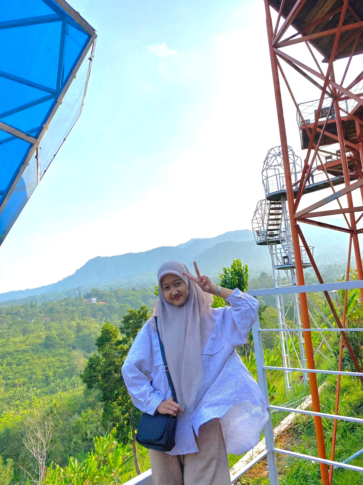

This is my official portfolio website to showes all
Details and work exiprins Frontend Developer
About
Skill
Skill atau keahlian saya dalam membuat aplikasi mulai dari riset, desain antarmuka dan pengkodean.
Desain
Dalam mendesain saya biasanya menggunakan aplikasi figma. Dalam masa perkuliahan seringkali terdapat sebuat tugas project tim dan beberapa kali saya bertugas sebagai UI/UX.
Frontend Developer
Dalam hal ini banyak mencakup ke pengkodean sebuah aplikasi, dalam perkuliahan saya telah mempelajari kotlin, php, html, css, dan java.
Riset/Dokumentasi
Dalam pembuatan aplikasi baik berbasis web atau mobile biasanya membutuhkan sebuah riset dan dokumentasi untuk pendataan diawal atau akhir pembuatan sebuah aplikasi.
Contact
Berikut saya cantumkan email saya supaya dapat menghubungi saya jika ingin menanyakan lebih lanjut tentang saya.